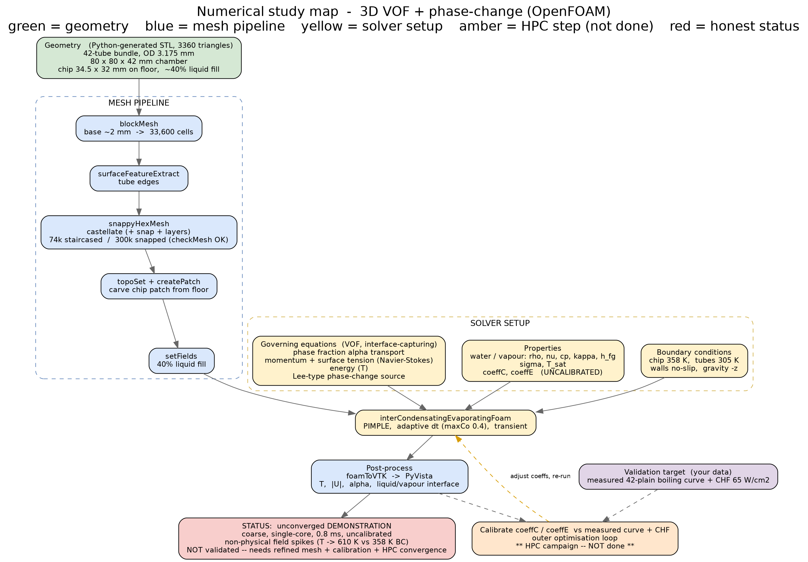

R² 0.938
MODEL VS 261 DATA POINTS
My doctoral research at RIT, advised by Dr. Satish Kandlikar, asks how much heat a sealed, pump-free boiling chamber can remove from a processor-scale surface. The program runs on three legs that check each other: experiments on a patented 1U chamber, a validated reduced-order thermal model, and an OpenFOAM phase-change CFD framework. This page is the map; the three pages below are the territory.
Current GPUs dissipate 500 to 1000 W per device at substrate heat fluxes of 50 to 100 W/cm², and announced parts push past that. Air cannot carry it, cold plates need pumps, and spray cooling needs pressurized plumbing. Pool boiling removes comparable fluxes with no moving parts, and sealing the chamber with a submerged condenser turns it into a passive thermosiphon: vapor condenses on coolant-fed tubes above the surface and rains back down, with zero pumping power on the refrigerant side. The catch is the critical heat flux ceiling, and raising that ceiling on a real, processor-sized surface is the dissertation.
The work runs on a compact chamber that fits a standard 1U server envelope, under 50.8 mm tall, whose design is protected by U.S. Patent 12,349,313 B2, assigned to RIT. My research characterizes, models, and extends that chamber: microchannel-enhanced copper substrates, a dual-taper microgap manifold, an enhanced finned-tube condenser, and operation at subatmospheric pressure so water boils at 49 °C instead of 100.
Experiments. Subcooled pool boiling of water at 12 kPa and Novec 7000 at 1 atm on identical 11.04 cm² microchannel substrates, four channel widths, with and without the taper manifold, across coolant temperatures. Peak results: 195.3 W/cm² with water and the highest CHF reported for HFE-7000 on any surface above 1 cm². Published across four ASME journal papers with a fifth in press.
The experiments and what they found →
Reduced-order model. A gray-box thermal network that predicts chip temperature from geometry, coolant condition, and heat flux, calibrated on part of the data and validated against 261 measured points spanning two chamber generations, two surface types, and four coolant temperatures: RMSE 4.34 K, R² 0.938.
The model and its validation →
CFD. An OpenFOAM program with two arms: single-phase conjugate flow through three condenser manifold generations, which found that flow distribution is governed by feed geometry rather than tube count, and a calibrated 2D and 3D volume-of-fluid phase-change framework for the boiling chamber itself.

I also presented the boiling chamber thermal-network work first-author at IEEE ITherm 2026 in Orlando. Two manuscripts from the modeling program are hosted here as preprints, downloadable on their pages: Part I, the validated reduced-order model, and Part II, the CFD framework. Additional manuscripts are in review.
Alongside the chamber program, I collaborate with Dr. Cristian Linte on NSF-funded transient bioheat transfer modeling for cardiac radiofrequency ablation: tissue-scale thermal models validated against thermocouple measurements at millimeter depths, with the agreement quantified the way medical work demands, down to Bland-Altman limits.